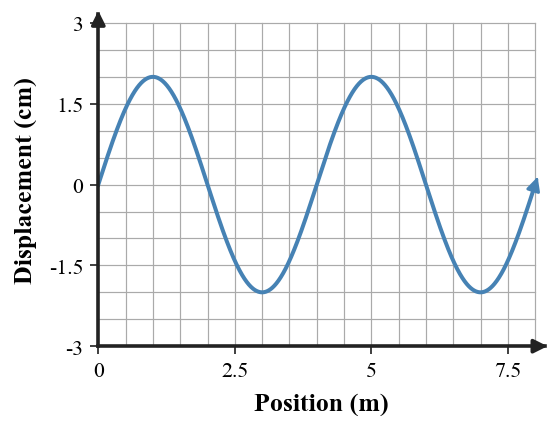

1. A metronome arm swings left and right again and again. What makes this motion a vibration?
2. In a traveling wave, what is transferred from the source to another location even though the medium does not travel with the wave?
3. State how amplitude is measured on a transverse-wave diagram.
4. A rope element moves up and down while the pulse moves horizontally. Classify the wave as transverse or longitudinal.
5. Write the relationship that connects wave speed, frequency, and wavelength.
6. The graph shows a periodic wave profile. Estimate the amplitude and wavelength from the axes, then explain which measurement is vertical and which is horizontal.

7. A water wave has frequency 4.0 Hz and wavelength 1.8 m. Calculate its wave speed.
8. A wave repeats 5 times each second. Determine its period.
9. A pulse train travels at 12 m/s with frequency 3 Hz. Determine the wavelength.
10. Two waves move through the same rope at the same speed. Wave A has twice the frequency of Wave B. Compare their wavelengths and explain using $v=f\lambda$.
11. A student says, “The particles of the rope move from one end of the room to the other with the wave.” Critique the claim using the distinction between particle motion and wave-energy transfer.
12. Two students disagree: one says increasing frequency must make a wave move faster; the other says the wavelength can change while speed remains set by the medium. Decide which model is better for waves in one unchanged medium and defend it.
13. Which description best matches a vibration?
14. What does a mechanical wave carry from place to place?
15. Amplitude is measured from
16. Which is a longitudinal-wave feature?
17. A wave has $f=5$ Hz and $\lambda=2$ m. Its speed is
18. A period of 0.20 s corresponds to
19. For two waves in the same medium at the same speed, the wave with greater frequency has
20. Which statement correctly distinguishes transverse and longitudinal waves?